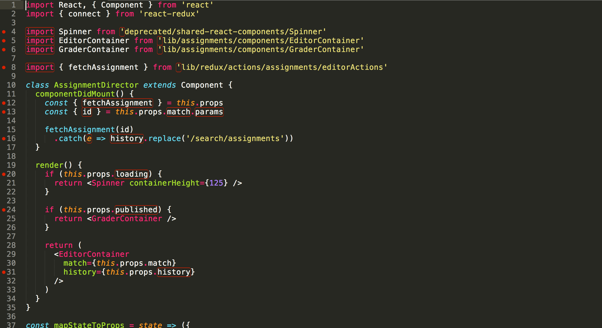

In my eyes, coding standards in programming is the equivalent of grammar in languages. With that, coding standards is a set of rules for programmers to follow while coding. Some of these rules include syntax, code format, and many other things. By following these rules, it helps produce a polished code that can be easily read and interpreted by other programmers.
There were a lot of ups and downs with ESLint for me. It was something that was hard to get used to in the beginning. One of the hardest parts of using ESLint for me was the red warning lines whenever my code did not follow the ESLint coding standards. Seeing the red lines would sometimes distract me from writing my program. I would sometimes stop what I was typing, and try to fix my error. I noticed that this would cut into my time. Being time-efficient is very important, especially during the athletic software engineering practices, where it is timed. I am hoping that over the semester, as I get comfortable with using ESLint, I will be able to first code, then edit according to the found errors in the program.
Although there were some downs with ESLint, I think that it is a very helpful tool. Not only does ESLint ensure that my code will be readable to others because it follows the coding standards, but it also helps while coding. I am a person who usually makes a lot of small mistakes in my code, especially forgetting to add semicolons at the end of each line. In the previous IDE used in this class, JSFiddle, I noticed that it would not catch these small mistakes in my code, which would lead to my code not working as it should be. Now with ESLint constantly checking for errors in my code, it tells me where in my code the error occurs and what error it is. A neat part of ESLint is that, with some errors, it can provide a solution to fix the error. This is one of the things I love to use, especially when the errors are on the formatting of the code.
Coding standards is a very important part of coding. Although at times it seems like a hassle making small tweaks to pass ESLint, I think that it is necessary for programmers to follow. With that, I hope to utilize ESLint to produce quality code. I also hope to learn some of the rules in the coding standards that Javascript must follow. It will be fun knowing what coding habits I have that do not follow these rules, and unlearning them to avoid getting a lot of red error lines.